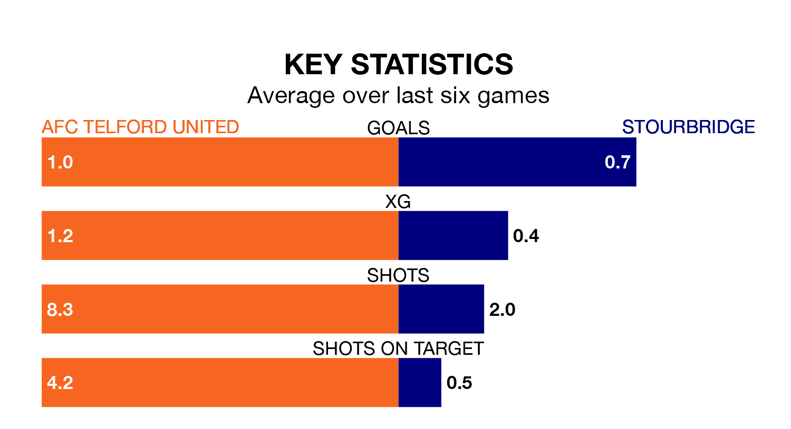

AFC Telford United face Stourbridge on Saturday seeking to protect their formidable unbeaten run in Southern League Premier Central.
The Bucks are unbeaten in 14, with eight wins and six draws, ahead of the 3pm kick-off.
They face a Stourbridge team who have won six and drawn one over the same number of games.
With 36 goals in 25 games so far this season, Telford United are scoring at below the league average rate with 1.4 goals per game. But they are conceding fewer than average too, letting in 21 goals at a rate of 0.8 per game.
Stourbridge, meanwhile, are average scorers, with 1.5 goals per game. They have conceded 1.3 goals per game.
The Bucks are sixth in the table after 25 games, of which they have won 11 and drawn nine, earning 42 points.
The away side are nine places behind the hosts in 15th, with 10 wins and three draws putting them on 33 points.
Telford United's last match was on Tuesday, a 1-1 draw against Coalville Town.
Stourbridge beat Alvechurch 1-0 last time out, also on Tuesday.
Updated: 08:51 (UTC), 25/01/24